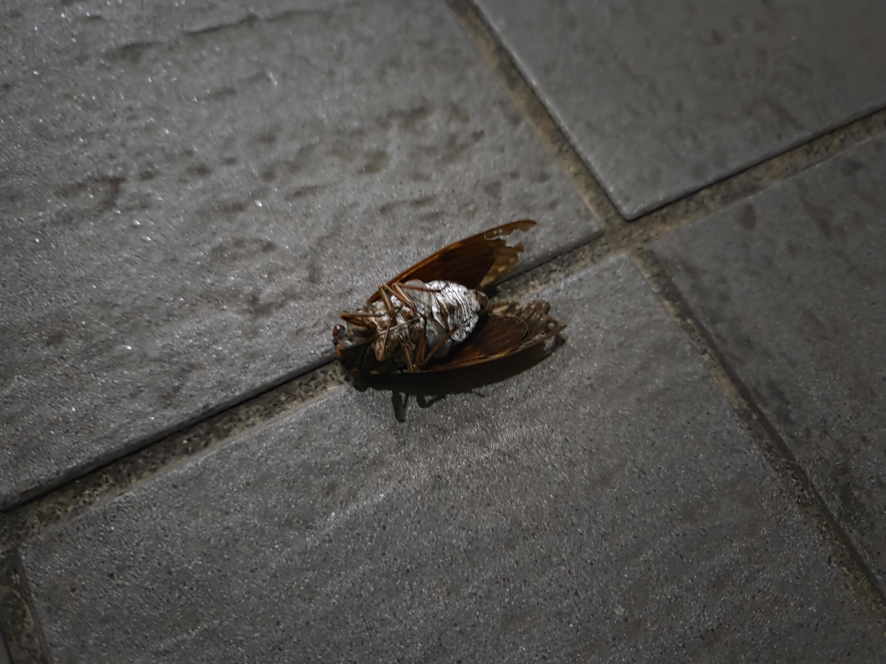
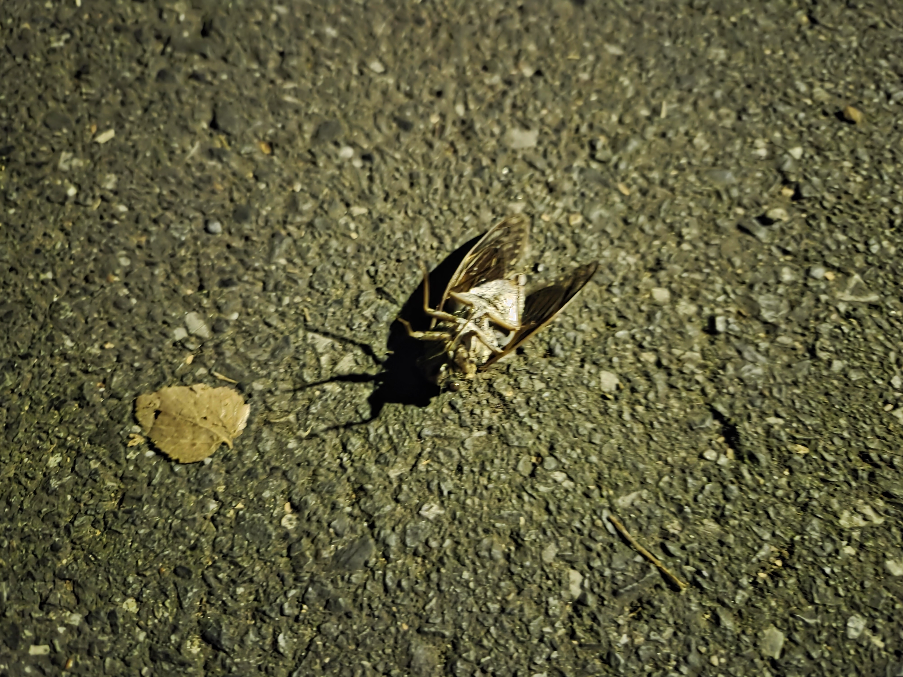

こんにちは、ザクザク食感です。
今季の犠牲者です。






おやすみなさい。
閑話休題
昔のフォロワーに一年ぶりに会った。
本当はもっと前に会う予定を立てていたのだが、僕がコロナになったりここ最近の人生の激しさで時間を取れなかったりで延期しまくっていた。
たま～～～に連絡を取ったり、僕が一方的に転生後のアカウントを発見して監視したりはしていたので、今どうしているのかはなんとなく把握していたのだが、ちゃんと話すのは久しぶりだった。
久々に会ったフォロワーは、びっくりするほど痩せていた……僕も一応ダイエットを継続しているので悔しかった……
初めて会ったときからどんどんファッションの系統がかっこよくなっていっていたが、今回はさらにかっこよくなっていた。憧れる！！！僕も着たい服が着たい！！！
フォロワーとは対照的に、僕は歳を重ねるにつれてどんどん身の丈を知って無難な服しか着ないようになっているので、悲しかった……頑張って痩せようと思った。
以前行こうと話していた赤からに行って、飲み放題にしてガバガバお酒を飲んだ。痩せようとか2秒後には忘れていた。
辛い牛モツ鍋のお店のはずなのにモツが3つぐらいしか入っていなかった。でも充分美味しかった。
お互いの近況を話した。コミティアとか恋人とかの話をした。喜んでくれて嬉しかった。
会うたびに言われているが、僕はなんでも受け入れてしまう性格だから、自分で居場所を選んで幸せになってくれと言ってくれた。昔よりはそうできていると思う。
フォロワーは仕事も人間関係も順調そうで（人間関係については達観しすぎな部分もあると思うけど）、資格取得のための勉強や筋トレを頑張っていた。自分で自分を幸せにできる道を歩もうとしていた。
僕は弱くてそれをできそうにもなくて、フォロワーは強いなと思った。
昔は同じアイドルを応援してツイキャスで延々話したりして同じ場所にいると思っていたのに、少し見ない間に大人になったんだなと思った。
僕は僕なりにかなり成長したつもりでいたけど、知らない世界もまだまだあるんだなと思った。
2軒目で非喫煙者のフォロワーを喫煙所に連行してタバコを吸わせたり（ごめん）、フォロワーが好きなつけ麺屋さんに行ってお腹がはじける寸前まで食べたりして遊んで解散した。
フォロワーは僕より飲んでいるのに酔わないし僕より食べているのに全然お腹が苦しそうじゃないしずっと余裕そうだった。しかも1軒目は奢ってもらいました！！！情けねぇ……ありがとね……
また会うときにはもう少し成長していたいと思いました。
閑話休題
最近夢見が悪い。
僕が飲んでいる眠剤（デエビゴ）には悪夢を見る副作用があるのだが、眠剤が影響しない時間の睡眠でも悪夢を見るので気が滅入る。
夢では何か失ったり、変なものを食べたり、疎遠になった人と一緒にいたことのない場所にいたり、何かを失ったりし続けている。
妙にリアルで現実と夢との差がつかなくなる。
すべてグロい導線のように思えて仕方がない！！！！！
とか思って狂っていた。僕の偽アカのﾎﾟﾘﾎﾟﾘｶﾘｶﾘﾎﾟﾘﾎﾟﾘｶﾘｶﾘ食感としゃぶ葉に行ってから、胃も精神も夢もなんかおかしい。
冗談はさておき、昔鬱がひどかったときこんな状態だったような気がして、自分の変わらなさをさらに自覚した……
すべて地続きで、抱え続けるものもあって、だからこそ無意味なことなんて何一つないと思い続ける日々なのでありました。
全然関係ないけど今週末9/7（日）のコミティア153でムニライス大先生の本に寄稿させてもらってるので、みんな買ってね！
僕も買いに行きます。詳しい情報が出たらツイッターでも言います。

それでは、さようなら。